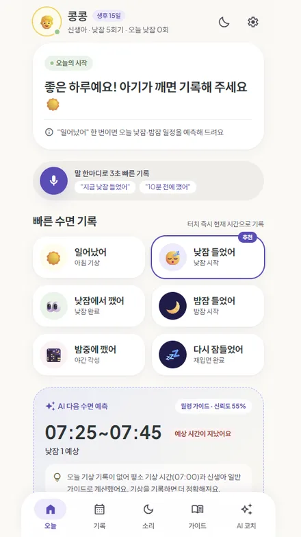
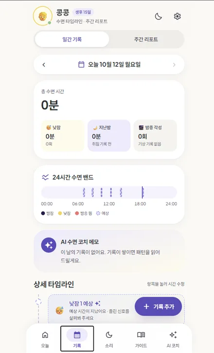
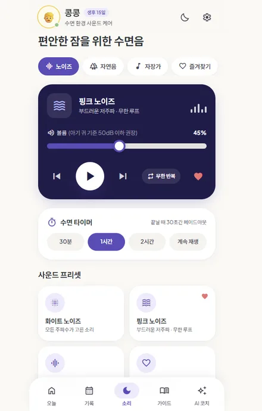
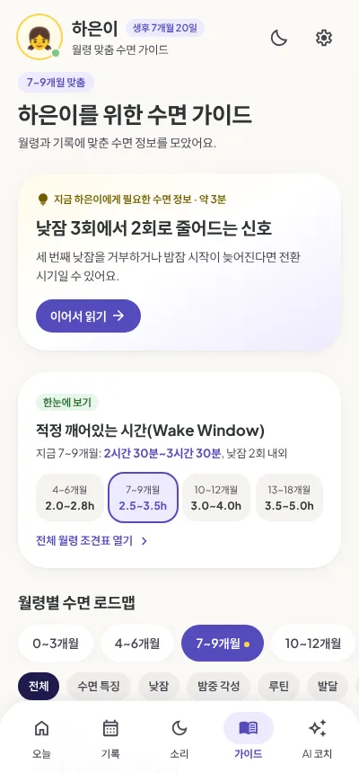
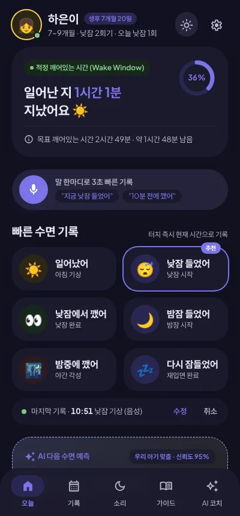
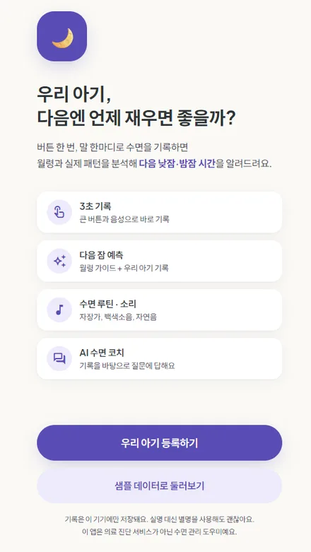
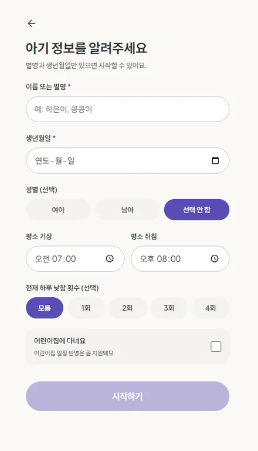

<title>Baby Sleep Coach</title>
<link rel="preconnect" href="https://fonts.googleapis.com">
<link rel="preconnect" href="https://fonts.gstatic.com" crossorigin>
<link rel="stylesheet" href="https://fonts.googleapis.com/css2?family=Jua&family=IBM+Plex+Sans+KR:wght@400;500;600;700&family=IBM+Plex+Mono:wght@500&display=swap">
<style>
/* Layout: a night-sky hero carrying a 24-hour sleep band, then alternating screen/feature rows on a soft daylight page. */
:root{
  --bg:#f7f5f0; --surface:#ffffff; --ink:#24213a; --muted:#6a6680; --line:#e6e2ee;
  --lav:#5b4bb7; --lav-soft:#ece8fb; --butter:#f4cf5c; --sage:#7fa98a; --coral:#e07a6e;
  --night:#1d1a3a; --night-2:#2a2652; --night-ink:#f2effc; --night-muted:#b7b1d6;
  --f-display:"Jua","IBM Plex Sans KR",system-ui,sans-serif;
  --f-body:"IBM Plex Sans KR",system-ui,-apple-system,"Apple SD Gothic Neo","Malgun Gothic",sans-serif;
  --f-mono:"IBM Plex Mono",ui-monospace,Menlo,monospace;
}
@media (prefers-color-scheme:dark){:root:not([data-theme="light"]){
  --bg:#14122a; --surface:#1f1c3b; --ink:#ece9f8; --muted:#a8a3c4; --line:#322e55;
  --lav:#a597f2; --lav-soft:#2b2753; --butter:#f2d272; --sage:#93c19f; --coral:#ec948a;
  --night:#0e0c20; --night-2:#1f1b42; color-scheme:dark}}
:root[data-theme="dark"]{
  --bg:#14122a; --surface:#1f1c3b; --ink:#ece9f8; --muted:#a8a3c4; --line:#322e55;
  --lav:#a597f2; --lav-soft:#2b2753; --butter:#f2d272; --sage:#93c19f; --coral:#ec948a;
  --night:#0e0c20; --night-2:#1f1b42; color-scheme:dark}

*{box-sizing:border-box}
body{background:var(--bg);color:var(--ink);font-family:var(--f-body);font-size:16px;line-height:1.7;word-break:keep-all;overflow-wrap:anywhere}
a{color:inherit}
.wrap{max-width:1080px;margin:0 auto;padding-inline:20px}
h1,h2,h3{text-wrap:balance;margin:0;line-height:1.3}
h2{font-family:var(--f-display);font-weight:400;font-size:clamp(28px,4.4vw,40px)}
h3{font-size:20px;font-weight:700}
p{margin:0}
.eyebrow{font-size:13px;font-weight:600;letter-spacing:.06em;color:var(--lav)}
.lead{color:var(--muted);max-width:60ch}
:focus-visible{outline:3px solid var(--butter);outline-offset:3px;border-radius:8px}

/* buttons */
.btns{display:flex;flex-wrap:wrap;gap:12px}
.btn{display:inline-flex;align-items:center;gap:8px;padding:14px 24px;border-radius:999px;font-weight:700;text-decoration:none;font-size:16px;transition:transform .15s}
.btn:hover{transform:translateY(-2px)}
.btn-primary{background:var(--butter);color:#2a2340}
.btn-ghost{border:1.5px solid currentColor;opacity:.9}

/* hero */
.hero{background:radial-gradient(120% 80% at 80% 0%,var(--night-2),var(--night) 70%);color:var(--night-ink);padding-block:56px 40px;position:relative;overflow:hidden}
.stars{position:absolute;inset:0;pointer-events:none}
.hero-grid{display:grid;grid-template-columns:1.15fr .85fr;gap:40px;align-items:center;position:relative}
.hero-copy{display:flex;flex-direction:column;gap:22px;min-width:0}
.brand{display:flex;align-items:center;gap:10px;font-weight:700}
.brand-mark{width:40px;height:40px;border-radius:12px;background:#5b4bb7;display:grid;place-items:center}
.hero h1{font-family:var(--f-display);font-weight:400;font-size:clamp(36px,6vw,60px);line-height:1.2}
.hero h1 em{font-style:normal;color:var(--butter)}
.hero .lead{color:var(--night-muted);font-size:17px}
.hero .lead b{color:var(--night-ink)}
.tagline{font-size:15px;color:var(--night-muted);border-left:2px solid var(--butter);padding-left:12px}
.hero .btn-ghost{color:var(--night-ink)}
.hero-phone{justify-self:center}

/* phone frame */
.phone{width:min(280px,100%);border-radius:36px;padding:9px;background:#0b0a18;box-shadow:0 30px 60px -20px rgba(10,8,30,.55),0 0 0 1px rgba(255,255,255,.08) inset}
.phone img{display:block;width:100%;border-radius:28px;aspect-ratio:9/16;object-fit:cover;object-position:top;background:#f7f5f0}

/* 24h band */
.band-card{margin-top:44px;position:relative;background:rgba(255,255,255,.05);border:1px solid rgba(255,255,255,.1);border-radius:20px;padding:20px 22px}
.band-head{display:flex;flex-wrap:wrap;justify-content:space-between;gap:8px;font-size:14px;color:var(--night-muted);margin-bottom:14px}
.band-head strong{color:var(--night-ink);font-weight:600}
.band{position:relative;height:40px;border-radius:12px;background:rgba(255,255,255,.08);overflow:hidden}
.seg{position:absolute;top:0;bottom:0}
.seg.night{background:#4a3fa0}
.seg.nap{background:var(--butter)}
.seg.pred{background:repeating-linear-gradient(135deg,rgba(244,207,92,.55) 0 5px,transparent 5px 10px);border:1.5px dashed var(--butter);border-radius:8px}
.seg.now{width:2px;background:#fff;box-shadow:0 0 8px #fff}
.ticks{display:flex;justify-content:space-between;font-family:var(--f-mono);font-size:12px;color:var(--night-muted);margin-top:8px;font-variant-numeric:tabular-nums}
.legend{display:flex;flex-wrap:wrap;gap:16px;font-size:13px;color:var(--night-muted);margin-top:12px}
.legend i{display:inline-block;width:12px;height:12px;border-radius:4px;margin-right:6px;vertical-align:-1px}

/* sections */
section{padding-block:72px}
.sec-head{display:flex;flex-direction:column;gap:12px;margin-bottom:40px}

/* steps */
.steps{display:grid;grid-template-columns:repeat(3,1fr);gap:20px;counter-reset:s}
.step{background:var(--surface);border:1px solid var(--line);border-radius:20px;padding:24px;display:flex;flex-direction:column;gap:10px}
.step-n{font-family:var(--f-mono);font-size:13px;color:var(--lav)}
.step p{color:var(--muted);font-size:15px}
.quote{margin-top:4px;display:flex;flex-wrap:wrap;gap:6px}
.chip{font-size:13px;padding:3px 10px;border-radius:999px;background:var(--lav-soft);color:var(--lav);font-weight:600}

/* features */
.feature{display:grid;grid-template-columns:300px 1fr;gap:56px;align-items:center;padding-block:36px;border-top:1px solid var(--line)}
.feature:first-of-type{border-top:0}
.feature.flip{grid-template-columns:1fr 300px}
.feature.flip .phone{order:2}
.feature .phone{justify-self:center;background:#0b0a18}
.f-copy{display:flex;flex-direction:column;gap:14px;min-width:0}
.tab-label{display:inline-flex;align-self:flex-start;gap:6px;font-size:13px;font-weight:700;padding:4px 12px;border-radius:999px;background:var(--lav-soft);color:var(--lav)}
.f-copy h3{font-family:var(--f-display);font-weight:400;font-size:clamp(24px,3.2vw,30px)}
.f-copy p{color:var(--muted);max-width:52ch}
.f-list{list-style:none;padding:0;margin:4px 0 0;display:grid;gap:8px}
.f-list li{padding-left:22px;position:relative;font-size:15px}
.f-list li::before{content:"";position:absolute;left:2px;top:.62em;width:8px;height:8px;border-radius:50%;background:var(--butter);box-shadow:0 0 0 3px color-mix(in srgb,var(--butter) 30%,transparent)}

/* engine */
.engine{background:var(--surface);border-block:1px solid var(--line)}
.engine-grid{display:grid;grid-template-columns:1fr 1.1fr;gap:48px;align-items:start}
.engine-copy{display:flex;flex-direction:column;gap:18px;min-width:0}
.formula{display:grid;gap:10px}
.formula div{display:flex;gap:12px;align-items:baseline;padding:14px 16px;border-radius:14px;background:var(--bg);font-size:15px}
.formula b{font-family:var(--f-mono);font-weight:500;color:var(--lav);min-width:2.2em}
.table-wrap{overflow-x:auto;border:1px solid var(--line);border-radius:16px;min-width:0}
table{border-collapse:collapse;width:100%;font-size:14.5px;font-variant-numeric:tabular-nums}
caption{text-align:left;padding:14px 16px 4px;font-weight:700;font-size:15px}
th,td{padding:10px 16px;text-align:left;white-space:nowrap}
thead th{font-size:12.5px;color:var(--muted);font-weight:600;border-bottom:1px solid var(--line)}
tbody tr+tr td{border-top:1px solid var(--line)}
td.mono{font-family:var(--f-mono);font-weight:500}
.wwbar{display:inline-block;height:8px;border-radius:4px;background:var(--lav);opacity:.75;vertical-align:middle}
.table-note{font-size:13px;color:var(--muted);padding:10px 16px 14px}

/* trust */
.trust{display:grid;grid-template-columns:repeat(3,1fr);gap:20px}
.trust-item{display:flex;flex-direction:column;gap:8px;padding:22px;border-radius:20px;border:1px solid var(--line);background:var(--surface)}
.trust-item svg{color:var(--lav)}
.trust-item p{color:var(--muted);font-size:15px}

/* start */
.start{background:var(--night);color:var(--night-ink);border-radius:32px;padding:48px;display:grid;grid-template-columns:1fr auto;gap:40px;align-items:center}
.start .lead{color:var(--night-muted)}
.start .btn-ghost{color:var(--night-ink)}
.start-copy{display:flex;flex-direction:column;gap:20px;min-width:0}
.start h2 em{font-style:normal;color:var(--butter)}
.mini-phones{display:flex;gap:14px}
.mini-phones .phone{width:170px;border-radius:26px;padding:6px}
.mini-phones .phone img{border-radius:20px}
.mini-phones .phone:last-child{transform:translateY(28px)}
.url{font-family:var(--f-mono);font-size:14px;color:var(--night-muted)}

footer{padding-block:40px 56px;color:var(--muted);font-size:13.5px}
footer .wrap{display:flex;flex-wrap:wrap;justify-content:space-between;gap:12px}

@media (max-width:860px){
  .hero-grid,.engine-grid,.start{grid-template-columns:1fr}
  .hero-phone{order:2}
  .steps,.trust{grid-template-columns:1fr}
  .feature,.feature.flip{grid-template-columns:1fr;gap:28px}
  .feature.flip .phone{order:0}
  .start{padding:32px 22px}
  .mini-phones{justify-content:center}
  .mini-phones .phone{width:min(150px,42vw)}
  section{padding-block:56px}
}
@media (prefers-reduced-motion:reduce){.btn{transition:none}.btn:hover{transform:none}}
</style>

<header class="hero">
  <canvas class="stars" id="stars" aria-hidden="true"></canvas>
  <div class="wrap">
    <div class="hero-grid">
      <div class="hero-copy">
        <div class="brand">
          <span class="brand-mark" aria-hidden="true"><svg width="22" height="22" viewBox="0 0 24 24"><path d="M20 14.5A8.5 8.5 0 0 1 9.5 4a8.5 8.5 0 1 0 10.5 10.5Z" fill="#f4cf5c"/></svg></span>
          Baby Sleep Coach · 영유아 AI 수면 코치
        </div>
        <h1>우리 아기,<br>다음엔 언제 <em>재우면</em> 좋을까?</h1>
        <p class="lead">버튼 한 번, 말 한마디로 수면을 기록하면 월령과 실제 패턴을 분석해 <b>다음 낮잠·밤잠 시간</b>을 알려드려요. 수면 루틴, 월령별 가이드, 수면음까지 한 앱에서.</p>
        <p class="tagline">기록하는 육아 앱이 아니라, 우리 아기가 언제 자야 하는지 함께 배우는 AI 수면 코치</p>
        <div class="btns">
          <a class="btn btn-primary" href="https://babysleep-coach.vercel.app/" target="_blank" rel="noopener">앱 열어보기 →</a>
          <a class="btn btn-ghost" href="#features">기능 둘러보기</a>
        </div>
      </div>
      <div class="hero-phone phone"></div>
    </div>

    <div class="band-card" aria-label="24시간 수면 밴드 예시">
      <div class="band-head"><strong>24시간 수면 밴드 · 예시 하루 (생후 7개월)</strong><span>지금 12:40 · 다음 낮잠 13:30~13:50 예상</span></div>
      <div class="band" id="band"></div>
      <div class="ticks"><span>00:00</span><span>06:00</span><span>12:00</span><span>18:00</span><span>24:00</span></div>
      <div class="legend"><span><i style="background:#4a3fa0"></i>밤잠</span><span><i style="background:var(--butter)"></i>낮잠</span><span><i style="border:1.5px dashed var(--butter)"></i>예상</span><span><i style="background:#fff"></i>지금</span></div>
    </div>
  </div>
</header>

<main>
  <section>
    <div class="wrap">
      <div class="sec-head">
        <span class="eyebrow">어떻게 작동하나요</span>
        <h2>기록은 3초, 예측은 자동으로</h2>
        <p class="lead">새벽에 한 손으로 아기를 안고 있어도 쓸 수 있도록 만들었어요. 기록이 쌓일수록 일반 가이드에서 우리 아기 맞춤으로 예측이 바뀝니다.</p>
      </div>
      <div class="steps">
        <div class="step"><span class="step-n">STEP 1</span><h3>버튼이나 말로 기록</h3><p>큰 버튼 6개를 누르거나, 마이크에 말하면 시간까지 알아서 해석해요.</p><div class="quote"><span class="chip">"지금 낮잠 들었어"</span><span class="chip">"10분 전에 깼어"</span></div></div>
        <div class="step"><span class="step-n">STEP 2</span><h3>월령 + 우리 아기 패턴 분석</h3><p>월령별 적정 깨어있는 시간(Wake Window)에 오늘 기록과 최근 7일 평균을 섞어 계산해요.</p></div>
        <div class="step"><span class="step-n">STEP 3</span><h3>다음 잠 시간을 범위로 안내</h3><p>"낮잠 13:30~13:50"처럼 범위와 근거, 신뢰도를 함께 보여줘요. 기록이 많을수록 신뢰도가 올라가요.</p></div>
      </div>
    </div>
  </section>

  <section id="features" style="padding-top:0">
    <div class="wrap">
      <div class="sec-head">
        <span class="eyebrow">하단 5탭 · 오늘 | 기록 | 소리 | 가이드 | AI 코치</span>
        <h2>잠과 관련된 모든 순간을 한곳에서</h2>
      </div>

      <div class="feature">
        <div class="phone"></div>
        <div class="f-copy">
          <span class="tab-label">오늘</span>
          <h3>지금 무엇을 해야 할지 한눈에</h3>
          <p>아기가 깬 지 얼마나 됐는지, 다음 잠은 언제인지 첫 화면에서 바로 보여줘요. 상황에 맞는 버튼에는 "추천" 표시가 붙어요.</p>
          <ul class="f-list">
            <li>일어났어 · 낮잠 들었어 · 낮잠에서 깼어 · 밤잠 들었어 · 밤중에 깼어 · 다시 잠들었어</li>
            <li>깨어있는 시간 링과 남은 시간 표시</li>
            <li>기록 직후 [수정]/[취소] 토스트로 실수도 바로 정정</li>
            <li>AI 다음 수면 예측: 시간 범위, 계산 근거, 개인화 수준</li>
          </ul>
        </div>
      </div>

      <div class="feature flip">
        <div class="phone"></div>
        <div class="f-copy">
          <span class="tab-label">기록</span>
          <h3>하루와 한 주의 잠을 그림으로</h3>
          <p>날짜별 총 수면, 낮잠, 밤잠, 밤중 각성 횟수를 요약하고 24시간 수면 밴드로 하루 흐름을 보여줘요.</p>
          <ul class="f-list">
            <li>상세 타임라인에서 항목을 눌러 시간 수정, 수동 기록 추가</li>
            <li>주간 리포트: 7일 막대그래프, 지난주 대비 변화</li>
            <li>AI Insight는 상관관계를 원인처럼 단정하지 않아요</li>
          </ul>
        </div>
      </div>

      <div class="feature">
        <div class="phone"></div>
        <div class="f-copy">
          <span class="tab-label">소리</span>
          <h3>편안한 잠을 위한 수면음</h3>
          <p>기본 소리는 기기에서 직접 합성해 인터넷이 없어도 재생돼요. 볼륨은 아기 귀 기준 50dB 이하를 권장해요.</p>
          <ul class="f-list">
            <li>노이즈: 화이트 · 핑크 · 브라운 · 심장소리</li>
            <li>자연음: 비 · 파도 · 숲 · 바람</li>
            <li>자장가: 오르골 · 브람스 · 허밍 · Cradle Beneath the Stars</li>
            <li>수면 타이머 30분·1시간·2시간, 끝날 때 30초간 서서히 꺼짐</li>
          </ul>
        </div>
      </div>

      <div class="feature flip">
        <div class="phone"></div>
        <div class="f-copy">
          <span class="tab-label">가이드</span>
          <h3>지금 우리 아기 월령에 맞는 정보</h3>
          <p>"신생아 수면은 원래 불규칙해요"처럼 지금 필요한 글을 먼저 골라 보여줘요. 3분이면 읽을 수 있는 분량이에요.</p>
          <ul class="f-list">
            <li>0~3개월부터 월령별 수면 로드맵</li>
            <li>수면 특징 · 낮잠 · 밤중 각성 · 루틴 · 발달 · 안전 카테고리</li>
            <li>적정 깨어있는 시간(Wake Window) 조견표</li>
            <li>안전 수면 체크리스트</li>
          </ul>
        </div>
      </div>

      <div class="feature">
        <div class="phone"></div>
        <div class="f-copy">
          <span class="tab-label">AI 코치</span>
          <h3>기록을 근거로 답하는 수면 코치</h3>
          <p>"오늘 왜 낮잠을 짧게 잤을까?"처럼 편하게 물어보세요. 답변은 우리 아기 기록에서 확인된 사실과 일반 정보를 나눠서 보여줘요.</p>
          <ul class="f-list">
            <li>다음 낮잠·밤잠 시간 추천, 이번 주 수면 패턴 요약</li>
            <li>월령별 낮잠 횟수 전환, 취침 루틴과 안전한 수면 환경</li>
            <li>지친 보호자를 위한 마음 다독이기</li>
            <li>수유·이유식 등은 질병관리청·대한소아청소년과학회 등 공신력 있는 자료를 출처와 함께</li>
          </ul>
        </div>
      </div>

      <div class="feature flip">
        <div class="phone"></div>
        <div class="f-copy">
          <span class="tab-label">야간 모드 · 수면 루틴</span>
          <h3>새벽에도 눈부시지 않게</h3>
          <p>어두운 방에서 휴대폰을 켜도 아기가 깨지 않도록 야간 모드를 제공해요. 시스템 다크 모드를 자동으로 따라가요.</p>
          <ul class="f-list">
            <li>수면 루틴: 단계·시간·소리를 편집하고, 예상 밤잠 시각에 맞춰 시작 시간 계산</li>
            <li>단계별 진행 화면에서 수면음 자동 재생, 마지막에 "밤잠 들었어" 기록</li>
            <li>알림: 낮잠 15분 전, 루틴 시작, 밤잠 준비</li>
          </ul>
        </div>
      </div>
    </div>
  </section>

  <section class="engine">
    <div class="wrap engine-grid">
      <div class="engine-copy">
        <span class="eyebrow">예측 엔진</span>
        <h2>시간 예측은 AI가 지어내지 않아요</h2>
        <p class="lead">다음 잠 시간은 언어 모델이 아니라 규칙 엔진이 계산해요. AI 코치는 계산된 값을 그대로 인용만 하도록 설계했어요.</p>
        <div class="formula">
          <div><b>①</b><span>월령별 적정 깨어있는 시간 (일반 가이드)</span></div>
          <div><b>②</b><span>오늘 기록: 아침 기상, 낮잠 시작·종료, 짧았던 낮잠 보정</span></div>
          <div><b>③</b><span>최근 7일 우리 아기 평균 (기록 3일 이상부터 반영)</span></div>
        </div>
        <p class="lead" style="font-size:15px">기록이 없으면 평소 기상 시간과 월령 가이드로 계산하고, 그 사실을 화면에 그대로 알려줘요.</p>
      </div>
      <div class="table-wrap">
        <table>
          <caption>월령별 깨어있는 시간 기준표</caption>
          <thead><tr><th>월령</th><th>깨어있는 시간</th><th></th><th>낮잠</th></tr></thead>
          <tbody id="ww"></tbody>
        </table>
        <p class="table-note">앱 예측 엔진(src/lib/predict.ts)에 들어 있는 시작값이에요. 일반 참고 범위이며 출시 전 소아청소년과 전문의 검토가 예정되어 있어요.</p>
      </div>
    </div>
  </section>

  <section>
    <div class="wrap">
      <div class="sec-head">
        <span class="eyebrow">개인정보 · 안전</span>
        <h2>아기 정보는 기기에만, 진단은 하지 않아요</h2>
      </div>
      <div class="trust">
        <div class="trust-item">
          <svg width="28" height="28" viewBox="0 0 24 24" fill="none" stroke="currentColor" stroke-width="2" stroke-linecap="round" stroke-linejoin="round" aria-hidden="true"><rect x="6" y="2" width="12" height="20" rx="3"/><path d="M11 18h2"/></svg>
          <h3>기록은 이 기기에만</h3>
          <p>수면 기록은 휴대폰 안에만 저장되고, 음성 원본은 저장하지 않아요. 실명 대신 별명을 써도 괜찮아요.</p>
        </div>
        <div class="trust-item">
          <svg width="28" height="28" viewBox="0 0 24 24" fill="none" stroke="currentColor" stroke-width="2" stroke-linecap="round" stroke-linejoin="round" aria-hidden="true"><path d="M12 3 4 6v6c0 4.5 3.4 8.3 8 9 4.6-.7 8-4.5 8-9V6l-8-3Z"/><path d="m9 12 2 2 4-4"/></svg>
          <h3>AI에는 최소한만</h3>
          <p>AI 코치에는 별명, 월령, 오늘 요약만 전달해요. 생년월일은 보내지 않아요.</p>
        </div>
        <div class="trust-item">
          <svg width="28" height="28" viewBox="0 0 24 24" fill="none" stroke="currentColor" stroke-width="2" stroke-linecap="round" stroke-linejoin="round" aria-hidden="true"><path d="M12 8v4M12 16h.01"/><circle cx="12" cy="12" r="9"/></svg>
          <h3>위험 신호는 바로 안내</h3>
          <p>건강 위험 키워드가 나오면 AI를 거치지 않고 119와 소아청소년과 전문의 상담을 안내해요.</p>
        </div>
      </div>
    </div>
  </section>

  <section style="padding-top:0">
    <div class="wrap">
      <div class="start">
        <div class="start-copy">
          <span class="eyebrow" style="color:var(--butter)">시작하기</span>
          <h2>별명과 생년월일이면<br><em>바로 시작</em>할 수 있어요</h2>
          <p class="lead">성별, 평소 기상·취침 시간, 하루 낮잠 횟수는 선택이에요. 먼저 둘러보고 싶다면 "샘플 데이터로 둘러보기"로 생후 7개월 아기의 10일치 기록을 확인해 보세요.</p>
          <div class="btns">
            <a class="btn btn-primary" href="https://babysleep-coach.vercel.app/" target="_blank" rel="noopener">우리 아기 등록하기 →</a>
            <a class="btn btn-ghost" href="https://github.com/EduThinking/babysleep-coach" target="_blank" rel="noopener">GitHub 보기</a>
          </div>
          <span class="url">babysleep-coach.vercel.app · 모바일 우선 웹앱(PWA)</span>
        </div>
        <div class="mini-phones">
          <div class="phone"></div>
          <div class="phone"></div>
        </div>
      </div>
    </div>
  </section>
</main>

<footer>
  <div class="wrap">
    <span>Baby Sleep Coach는 의료 진단 서비스가 아닌 수면 관리 도우미예요. 아기의 건강이 걱정되면 소아청소년과 전문의와 상담하세요.</span>
    <span>EduThinking</span>
  </div>
</footer>

<script>
// 24h band: example day for a 7-month-old (minutes from midnight)
(function(){
  var band=document.getElementById('band'); if(!band) return;
  var day=1440;
  function add(cls,a,b){var d=document.createElement('span');d.className='seg '+cls;d.style.left=(a/day*100)+'%';d.style.width=((b-a)/day*100)+'%';band.appendChild(d);}
  add('night',0,410); add('nap',565,640); add('pred',810,830); add('pred',1155,1185);
  var now=document.createElement('span');now.className='seg now';now.style.left=(760/day*100)+'%';band.appendChild(now);
})();

// Wake window table from ageNorm() in src/lib/predict.ts
(function(){
  var rows=[["신생아",35,60,5],["1개월",50,80,5],["2개월",60,100,4],["3개월",75,120,4],["4개월",90,135,3],["5~6개월",120,165,3],["7~9개월",150,210,2],["10~12개월",180,240,2],["13~15개월",210,300,2],["16~18개월",270,330,1],["19~24개월",300,360,1]];
  function fmt(m){var h=Math.floor(m/60),r=m%60;return h?(h+'시간'+(r?' '+r+'분':'')):(r+'분');}
  var tb=document.getElementById('ww'),max=360,html='';
  rows.forEach(function(r){
    var left=(r[1]/max*90).toFixed(1),w=((r[2]-r[1])/max*90).toFixed(1);
    html+='<tr><td>'+r[0]+'</td><td class="mono">'+fmt(r[1])+' ~ '+fmt(r[2])+'</td><td style="width:40%;min-width:120px"><span style="display:block;position:relative;height:8px;border-radius:4px;background:var(--lav-soft)"><span class="wwbar" style="position:absolute;left:'+left+'%;width:'+w+'%"></span></span></td><td class="mono">'+r[3]+'회</td></tr>';
  });
  tb.innerHTML=html;
})();

// starfield
(function(){
  var c=document.getElementById('stars'); if(!c||!c.getContext) return;
  var ctx=c.getContext('2d'),dpr=Math.min(window.devicePixelRatio||1,2),stars=[];
  var reduce=window.matchMedia&&matchMedia('(prefers-reduced-motion: reduce)').matches;
  function size(){var r=c.getBoundingClientRect();c.width=r.width*dpr;c.height=r.height*dpr;stars=[];var n=Math.round(r.width*r.height/9000);for(var i=0;i<n;i++)stars.push({x:Math.random()*c.width,y:Math.random()*c.height,r:(Math.random()*1.2+.3)*dpr,p:Math.random()*6.28});}
  function draw(t){ctx.clearRect(0,0,c.width,c.height);stars.forEach(function(s){var a=.35+.35*Math.sin(s.p+t/1400);ctx.fillStyle='rgba(242,239,252,'+a+')';ctx.beginPath();ctx.arc(s.x,s.y,s.r,0,6.29);ctx.fill();});if(!reduce)requestAnimationFrame(draw);}
  size(); addEventListener('resize',size); draw(0);
})();
</script>
